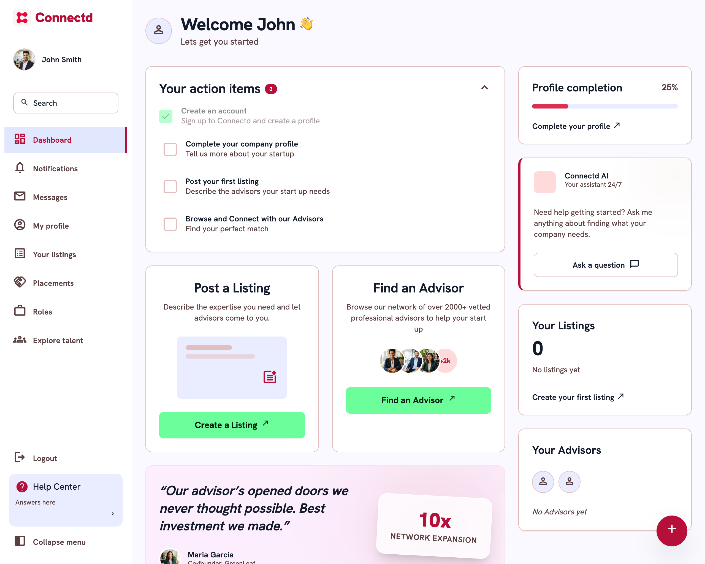

Context
One platform. Three distinct user types. One coherent experience.
Connectd is a professional marketplace connecting startups and scaleups with the investors, board advisors, and NEDs they need to grow. I led product design across the full platform — from onboarding and role-based dashboards to the matching algorithm UX, fundraising tools, and the trust systems that make high-stakes professional relationships possible at scale.
This wasn't a feature project — it was a system design challenge. The product had to serve three distinct user types with fundamentally different goals, mental models, and definitions of success, while maintaining a coherent, trustworthy platform experience that justified the professional stakes involved.
The Problem Space
Asymmetric value. Asymmetric risk.
The core tension was one of asymmetric value: startups needed credible investors and advisors urgently; investors and advisors needed curated, high-quality dealflow without noise. Getting the matching wrong in either direction destroyed trust on both sides — and trust, on a professional network, is near-impossible to rebuild.
Founders, investors, and advisors each had fundamentally different goals, mental models, and definitions of success — with no single IA that served all three.
Startups needed credible matches urgently. Investors and advisors needed curated dealflow without noise. A mismatch in either direction destroyed trust on both sides.
On a professional network handling £50M+ in funding connections, trust is near-impossible to rebuild once lost. Every design decision was a trust decision.
The matching algorithm couldn't be exposed directly — but users needed confidence in its outputs. Surfacing signals in plain language was the design challenge.
58% of founders were abandoning at step 3 of onboarding — role and stage selection — before the platform had a chance to show them value.
Three user surfaces risked fragmenting into three parallel component libraries — multiplying engineering overhead and undermining visual coherence.
The Matching Moment — Live
Confidence without exposing the algorithm.
A recreation of the match card — the single most important surface on the platform. Weighted compatibility signals translate model output into plain language, and the handshake turns a recommendation into a relationship.
Northvale Ventures
Early-stage B2B SaaS · London · £250k–£1.5M cheques
They invest at pre-seed to seed — you're raising your seed round.
6 of their last 10 investments are in B2B SaaS and marketplaces.
Your £600k target sits inside their typical first cheque.
Both sides opt in before contact details are shared.
01 · Plain language, not scores alone
Each signal explains why in one sentence. A/B tests showed the explanation line, not the percentage, drove connection requests — false precision eroded trust.
02 · Signals above the fold
Hotjar scroll maps showed users never reached compatibility data. Moving signals above the fold drove a 65% increase in cross-side engagement over six weeks.
03 · The handshake moment
Mutual opt-in before contact details are exchanged. It slowed the funnel deliberately — and made every connection that happened feel earned, protecting both sides' time.
System Design
Role-based surfaces. One shared system.
The three-sided nature of the platform meant there was no single correct information architecture. Each user type needed a tailored surface with its own priority hierarchy, content model, and action set — without fragmenting into three separate products.
Every design decision had to work across all three, or explicitly trade off against one in service of the others.
Seed round · 4 committed investors · 2 in diligence
2 investors, 1 NED — stage and sector fit explained per card
Fintech scaling experience · first briefing call booked
Filtered to thesis: B2B SaaS, pre-seed–seed, UK & Nordics
Mutual opt-in — full context before contact details shared
Engagement tracker across portfolio and advisory positions
Series A fintech seeks NED — remuneration and equity stated upfront
Verification complete · 3 references · sector tags current
Advisory hours logged and milestone tracking in one view
- Role-based onboarding + profile builder
- Investor and advisor matching interface
- Fundraising tracker + raise status
- Board recruitment flow
- Founder resource hub
- Curated dealflow dashboard
- Compatibility signal display
- Portfolio and engagement tracker
- Advisor briefing and matching
- Connection and handshake flow
The matching layer surfaces weighted compatibility signals in plain language — giving both sides confidence without exposing the algorithm.
Mapping the whole three-sided system — surfaces, states and trust signals — onto one shared component set, before designing a single screen.
Deep Dive — Founder Onboarding
From nine gates to one progressive screen.
Amplitude funnels showed 58% of founders abandoning at step 3 — role and stage selection — before the platform had shown them any value. The fix wasn't fewer questions. It was restructuring when and why we asked them.
Before
Nine sequential gates.
Every question was mandatory and upfront. Founders were asked to categorise themselves in investor vocabulary — "stage", "instrument", "raise structure" — before seeing a single match. The value was all at the end; the effort was all at the start.
After
One progressive screen.
Three plain-language questions produce first matches immediately; everything else is asked in context, after value is proven. Drop-off at the same point fell from 58% to 19%, and 30-day churn fell 34%.
Process
Mapping the system before touching the UI.
System mapping first
Mapped the full three-sided system — user states, data flows, matching triggers, and trust signals — before designing a single screen. This gave a shared model with the CPO and engineering leads to pressure-test against real user needs before committing to structure.
Discovery across all three user types
Ran discovery interviews with VC partners, angel investors, founders, and NEDs to surface divergent mental models across user types — ensuring the IA reflected how each group actually thought about their goals.
Role-based IA with a single component system
Defined role-based IA — one platform, three radically different surfaces — while designing a single component system with 80% reuse across all user types, eliminating the need for parallel libraries.
Matching UX in plain language
Designed the matching interface to surface weighted compatibility signals in plain language — giving both sides confidence in the recommendation without exposing the underlying algorithm or creating false precision.
Trust and credibility layer
Built the trust system: verification badges, social proof surfaces, profile completeness signals, and the handshake moment where a match becomes a real connection. These weren't cosmetic additions — they were the product.
Live A/B testing with the data team
A/B tested messaging, card density, and CTA placement on match cards against live connection-rate data. Collaborated with the data team to translate matching model outputs into legible, actionable UI signals.
What I Built
Features and systems designed across the product.
| Role-based dashboards | One design system, three distinct user surfaces — 80% component reuse across all user types, eliminating parallel component libraries. |
| Matching interface | Compatibility signals moved above the fold based on Hotjar scroll map evidence — 65% increase in cross-side engagement over 6 weeks. |
| Founder onboarding redesign | Step 3 drop-off reduced from 58% to 19% via Amplitude funnel analysis — 34% decline in 30-day churn following the redesign. |
| Trust & credibility system | Verification badges, social proof surfaces, and profile completeness indicators — the core of why professional users trusted the platform. |
| Fundraising tracker | Raise status, investor pipeline, and key milestones in a single view — clarity on a complex process without requiring a separate CRM tool. |
| Board recruitment flow | Advisor discovery, briefing, and engagement tooling — designed to make the complexity of board-building legible at a glance. |
Product in Motion
The live platform, recorded.
Drop connectd_demo.mp4 into the same folder as this page — a short screen recording of the matching flow or founder dashboard will autoplay here.
Impact & Results
Outcomes, not just outputs.
From product analytics over the 12-month engagement, before vs. after redesign.
Tools & Stack
The Shipped Product
The founder home, live.
The production founder dashboard — onboarding action items driving activation, the red profile-completion heartbeat, green growth actions, and Connectd AI one question away. Every pattern in this case study, shipped.

Drop connectd-dashboard.png into the same folder as this page — the production founder-dashboard screenshot will appear here.